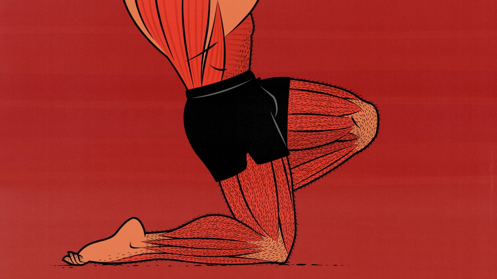

Leg day Workout Flow

If you've ever wondered what the Greek God Atlas does to squat heaven in between his shoulders, look no further. These will have you carrying the burden of your entire bloodline:
- Barbell Squats
- Stiff-legged Dumbell Deadlifts
- Calf Raises
Workout-flow
- Go heavy on the back-squats; we want to load our quads and glutes with the appropriate amount of tension that'll recruit as much muscle fibers as possible. Again, like with all exercises, make sure to use a challenging weight that doesn't sacrifice form.
- SLDLs are your prime choice to build your lower-back and hamstrings. Make sure to go as low as your flexibility and lower-back bracing allows, and squeeze your hips forward on the ascent.
- Calf raises should be performed on an elevated platform/object that allows for your heel to sink lower than the balls of your feet. This will allow for the stretching of the calf muscle and provide the utmost effective stimulus to grow those tree trunks.
If you do these correctly, you should feel a gnarly burn accompanied by some of the best leg pumps you've ever had!